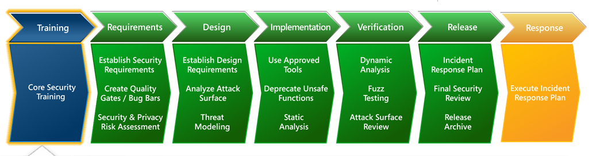

知道创宇研发技能表v3.1
日常安全业务开发注意点
开发环境
- 代码使用git或git-flow进行管理，要有规范的代码提交流程
- 定期做code review
- 关键服务端口尽可能不要暴露到公网上
安全开发流程
SDL，英文全称为Security Development Lifecycle, 即安全开发生命周期。最早由微软提出，在软件工程中实施，是帮助解决软件安全问题的办法。
详见 安全开发流程(SDL)
推荐阅读
- 《企业安全建设指南：金融行业安全架构与技术实践》 -- 甲方企业安全建设必读书目，经典书籍
- 《零信任网络》-- 原版书名：Zero Trust, 目前市面上有中文翻译的就这本了，强烈推荐阅读学习
- 《企业安全建设入门：基于开源软件打造企业网络安全》 -- 刘焱（兜哥）一本非AI向的安全书籍，个人觉得对于中小企业基于开源软件打造安全环境还是值得参考阅读的。
- 《数据安全架构设计与实战》 -- 着重讲解数据安全设计的书籍
安全岗位面试
请见 安全岗位面试知识整理
DevSecOps
请见 DevSecOps
常规Linux安全设置
禁止ping
这个方法永久生效，所以就不考虑临时生效、重启失效的方法了。
ubuntu 18.04有效（早期版本可能配置文件不同）
1.修改系统配置
vim /etc/sysctl.conf
文件尾部追加:
net.ipv4.icmp_echo_ignore_all = 1
然后wq!保存退出
2.使用这个命令使配置修改立刻生效（不用重启）
sysctl -p
安装OpenResty
参考官方文档：***.com 民间参考文件：***.com
Linux推荐编译安装
MacOS官方推荐brew安装
brew install openresty/brew/openresty -v
如果提示关于无法下载 ***.com/xxx，则需要手动增加解析（有全局代理也行）
原因：域名被DNS污染了，需要重新设置一下本地hosts，域名解析的读取顺序是：浏览器缓存->本地hosts文件->外部DNS
解决：在本地hosts文件加上：199.232.4.133 ***.com
MacOS安装好 OpenResty 的提示：
==> openresty
You can find the configuration files for openresty under /usr/local/etc/openresty/.
To have launchd start openresty/brew/openresty now and restart at login:
brew services start openresty/brew/openresty
Or, if you don't want/need a background service you can just run:
openresty
安装Lua
研发需要用到，这里记录下。其实很简单，建议参考官方文档。
curl -R -O ***.com
tar zxf lua-5.4.3.tar.gz
cd lua-5.4.3
make all test
目前支持的平台有：guess aix bsd c89 freebsd generic linux linux-readline macosx mingw posix solaris
对应平台安装(Mac OS举例)：
sudo make macosx
# 如果不行就执行下面这个
sudo make macosx install
检验安装
lua -v
lua xxx.lua
ref: - ***.com - ***.com
安全开发流程
安全开发流程(SDL)
安全开发流程，能够帮助企业以最小的成本提高产品的安全性。
SDL，英文全称为Security Development Lifecycle, 即安全开发生命周期。最早由微软提出，在软件工程中实施，是帮助解决软件安全问题的办法。
SDL是一个安全保证的过程，其重点是软件开发，它在开发的所有阶段都引入了安全和隐私的原则
大致步骤见下图：

安全需求分析
一般来说，不同企业执行效果是不一样的，取决于企业的支持力度，以及企业SDL体系的完整性、流程适用性、制度规范、宣传培训、人员能力（需求人员、研发人员、安全测试人员）、以及各种工具及平台。
其中：
1、最复杂的方式是威胁建模；
2、略降低复杂度的是基于业务场景的威胁分析，需要输出安全需求，最好能做成易执行的线上服务，尽可能降低对人员安全能力要求；
3、最简单的，提供线下问卷或checklist，提取安全需求。
综上所述，SDL要量体裁衣，根据实际情况找到切入点，有策略有打法的开展。并非一来就要完成最复杂的安全需求分析环节。
安全研发扫描器
扫描器分类
实现原理
基于ICMP的主机发现
基于TCP、UDP的主机发现
利用TCP三次握手原理探测主机存活
主要依据：目标主机响应数据包中的flags字段，如果flags字段有值，表示主机存活。
通常6种类型： - SYN 建立连接 - FIN 关闭连接 - ACK 应答 - PSH 包含DATA数据传输 - RST 连接重置 - URG 紧急指针
基于ARP的主机发现
信息收集
服务扫描
常用3种方法：
- 使用常见端口和服务映射表（如：Nmap中的nmap-services）
- 采集软件banner以读取目标软件信息
- 向目标开放端口发送探针数据包，然后根据返回的数据包与数据库中的记录进行比对，找出具体的服务信息（如：Nmap中的nmap-service-probe, 服务扫描所需的数据库文件,包括定制的探测包及预期的回复包,及识别服务类型的具体匹配方式。）
代码安全
推荐阅读
本来一直没什么特别好的参考的，直到前几天腾讯开源了《代码安全指南》 ，建议先学完这个再说。
常见安全实践
1.返回通用错误信息
在开源项目中，返回一个通用错误是默认的安全行为，此方法可避免因返回的response body内容向请求者泄露私密信息。
例如：当Flask的代码不处理异常时，返回的500错误不包含任何详细信息（如：traceback等）。
若想更多地控制返回给客户端的内容，应该自定义异常处理代码。
2.不要在生产环境上打开debug模式
虽然详细的异常信息有利于debug，但同时也会向请求者泄露系统部分关键信息。所以类似Django和Flask这类框架，仅在设置debug=True时，报错时才会返回详细的报错信息。
流量分析
恶意流量分析
一个强有力的意识就是：遇到可疑，就来RFC查询它们的合法解释，如果未找到合法的行为解释，显而易见，它属于非法。遇事不决，RFC文档。
Webshell流量检测
Webshell分类
Webshell主要分为三种类型，分别是：大马、小马、一句话木马。
主流的Webshell检测方式
- 基于Webshell流量的检测：在流量中检测具备Webshell恶意行为特点的流量；适用于在线实时检测流量，精准度要求比较高。
- 基于Webshell文件的检测：在主机上进行文件检测从而找出攻击者留下的Webshell后门文件；适用于主动对主机进行文件扫描并检测后门文件。
- 基于日志分析检测Webshell：通过流量行为日志进行分析，关联用户行为等从而找出Webshell恶意攻击行为；适用于在离线情况下对攻击者进行溯源和攻击线索发现。
目标
通过基于Webshell流量的检测方式对在线流量进行实时检测，利用机器学习技术找出流量中的Webshell异常行为，并通过实践应用的方式证明算法的可行性和有效性，找到了利用人工智能技术对Webshell流量进行检测的解决办法。
Webshell流量检测模型
常见的检测思路是利用Webshell流量的特点人工构建特征，采用监督学习算法对Webshell流量进行检测，实现对正常流量以及恶意流量的分类识别。
在学术届现有的研究实验上，对Webshell流量的识别准确率可以达到90%以上。
扩展
- 论0day抓取的姿势
- 网络防御之恶意流量分析
- Webshell流量检测
- ELK之使用packetbeat分析网络包流量 使用ELK技术栈可参考
日志审计
日志审计流程
一般包含4部分：日志获取、日志筛选、日志整合、日志分析
日志分析是系统核心，主要涉及系统的关联规则和联动机制。
日志审计的实现方式
主要有两种：基于规则库、数理统计方法。
【1】基于规则库
对已知攻击的特征进行分析，并从中提取规则，进而由各种规则组合成为规则库，系统在运行过程中匹配规则库中的规则信息，从而生成告警。
【2】数理统计方法
给网络流量、中央处理器（CPU）占用率等相关数据设置一个阈值，当超过这个阈值就发出告警。
日志审计面临的挑战
- 数据量大
- 日志输出方式多种多样
- 日志格式复杂，可读性差
- 分析备份工作繁杂
- 日志数据易被篡改或删除
网络靶场
各国靶场介绍
美国网络靶场
国家网络空间靶场（NCR）
美国为更好地实施网络作战任务，已于2009年建立美国网络司令部，计划通过模拟网络作战环境，进行各种仿真演习、训练，以填补美国军方在网络层面的各类作战能力缺失。
英国网络靶场
英国联邦网络空间靶场（FCR）
英国的网络靶场主要包括联邦网络实验靶场及Breaking point系统。
英国联邦网络实验靶场是英国第一个商业的网络实验平台，被用来模拟大型复杂网络，并在安全可控的试验环境下进行基础设计生存能力和可靠性方面的网络试验及评估，以评价它们对网络攻击的承受能力。
瑞典网络靶场（CRATE）
瑞典网络靶场和训练环境（Cyber Range And TrainingEnvironment，CRATE）
REF
- 网络空间靶场系列文章 - 强推，信息丰富，本身他们是做工控靶场的
- 合天网络靶场-大规模网络环境仿真服务平台
- 网络空间靶场技术研究
- IoT-vulhub IoT固件漏洞复现环境
零信任
概念
Zero Trust, 零信任（零信任网络、零信任模型），由当时Forrester的工程师John Kindervag于2010年提出。
思想核心
Never Trust, Always Verify. (从来不信任，始终在校验)
零信任网络的5个基本假定:
1.网络无时无刻不处于危险的环境中。
2.网络中自始自终存在外部或内部威胁。
3.网络的位置不足以决定网络的可信程度。
4.所有的设备、用户和网络流量都应当经过认证和授权。
5.安全策略必须是动态的，并基于尽可能多的数据源计算而来。
与传统网络安全架构的区别
传统网络安全架构基于网络边界防护。
企业建设网络安全体系时，大体步骤如下：
- 1.把网络划分为
外网、内网、DMZ区等不同的安全区域 - 2.在网络边界上通过部署防火墙、WAF和IPS等网络安全技术手段进行重重防护
缺陷：传统网络安全架构假设或默认了内网比外网更安全，在某种程度上预设了对内网中的人、设备、系统和应用的信任，从而容易忽视对内网安全措施的加强。
传统安全模型的主要缺点：
1.缺乏网络内部的流量检查。
2.主机部署缺乏物理及逻辑上的灵活性。
3.存在单点故障。
落地实践
国外首推Google，国内目前奇安信的积累应该比较丰富。
BeyondCrop
Google的BeyondCorp计划打造基于“零信任”模型的网络安全基础架构，认证基于受信任的设备和用户而非网络本身。
自2014年12月起，Google已先后发表了6篇BeyondCorp相关论文，全面介绍BeyondCorp的架构和实施情况。（360身份安全实验室已对该系列论文进行翻译）
技能树
简单列一列个人认为安全研发应该掌握的技能，不定时增量更新。
启发
主要受到"知道创宇研发技能表v3.1"的启发，虽然此表已经很长时间没有更新过了，但是也给很多安全从业者指引了学习的方向，立志做安全研发而没有明确学习方向者不妨参考此表学习。
正三观
常言道："习武先习德"。做安全相关工作的人一定要有正确的三观，勿以技术作恶。
0x01 编程语言
大家精力有限，推荐择其一二精通，其它有了解就好。
Python
写点批量脚本等必备，也有一些开源项目基于Python编写，必学之一。
Go
后端新趋势，目前不好安全类开源框架都是基于Go做开发的了，要看懂大神的开源代码，必学之二。
Java
后端常青树，也有不要经典渗透测试工具是基于Java开发的，有精力可学（科班出身的应该都有学吧）
PHP
代码审计常用，推荐学习
JavaScript
会这个的话挖掘前端漏洞如虎添翼，必学之三。
C
(科班必学)，非科班有精力也建议了解，二进制、逆向必学。
Assembly Language
汇编语言，二进制、逆向必学。
Rust
虽然较冷门，但是已在国内开始受到关注。
0x02 数据库
DevSecOps
本质上是安全开发生命周期(SDL)安全关口左移理念和DevOps的结合。
开源方案
- Hunter -- Hunter作为中通DevSecOps闭环方案中的一环，扮演着很重要的角色。
数据备份
产品数据异常的4个方面：磁盘错误、分区错误、系统错误、应用层错误。
对应解决方案
| 数据异常 | 常见解决方案 |
|---|---|
| 磁盘错误 | 组件磁盘整列/raid |
| 分区错误 | 备份分区表或不适用逻辑分区 |
| 系统错误 | 独立系统分区和独立系统盘 |
| 应用层错误 | 多种情况，针对数据库备份一般是：定期备份+主从同步备份 |
定期备份和主从同步备份的区别
| 定期备份 | 主从同步备份 |
|---|---|
| 资源消耗小 | 资源消耗大 |
| 定期备份 | （几乎）实时同步数据（可调整为延后同步） |
| 数据存在空档期 | 数据完整 |
| 单节点服务器首选 | 至少需要2台服务器，主流大数据平台首选 |
企业安全
数据泄露
企业数据泄露的2个主要原因：一是外部攻击，二是内部威胁。
科普
青藤云的这本科普漫画通俗易懂，点击这里访问
安全检查
- Security Checklist
常用安全配置命令
非root用户带sudo权限时
sudo bash -c "echo 1 > /proc/sys/net/ipv4/icmp_echo_ignore_all"
如果当前用户权限足够，直接执行
echo 1 > /proc/sys/net/ipv4/icmp_echo_ignore_all
智能风控
主要笔记基于梅子行的《智能风控：原理、算法与工程实践》和《智能风控：Python金融风险管理与评分卡》两本书。
智能风控：Python金融风险管理与评分卡
风控是金融的核心。
信用管理基础知识
智能风控：原理、算法与工程实践
信贷业务基础知识
渗透测试自动化
也有称其为红队攻击自动化等其它称呼。虽然标题是这么写的，实际目前的方案还是比较简单（接地的）。
至少在目前2021年这个时间段，AI自动化挖掘漏洞还没有很成熟的产品（虽然的确有厂商已经开发出相关产品，但使用效果未知）
自动化渗透测试的2条路
总体流程类似下图：
1.未使用AI的自动化（基于规则）
比如很接地的一套平民化方案（戏称为缝合怪方案）：
信息搜集 + 开源指纹识别 + 开源扫描 + 整理的exp + crawlgo + xray （代理免费的不好找，不过也可以写个代理爬虫，设计好代理池来维护爬虫）
2.使用AI辅助（基于模型）
AI辅助进行漏洞挖掘，即模拟+半自动化。当然，还是需要安全经验丰富的人来培养模型。而且，误报率高也是个问题。
开源项目
- ARL
- rengine
REF
列一下搜索引擎能搜到的资源，因为本人没用过，也不确定是否真的足够强大，毕竟从事安全行业的都知道产品的文案和实际产品能力有时候差别略大。
- 灵脉PTE 据说是利用了RNN深度学习算法
- 极光猎手
安全研发指纹识别
指纹识别和指纹提取
开发扫描器和资产探测相关的功能时，指纹是个绕不开的话题，这个笔记正是为此存在。
指纹识别技术原理
- Web指纹识别技术研究与优化实现
REF
- fofa语法的cms识别脚本
- TideFinger
反爬虫/Bot
如何识别隐秘的自动化恶意流量
腾讯安全Bot对抗的发展历程
对Bot流量的常见防御手段有哪些？
- 事前：设备指纹、生物探针、流量指纹
- 事中：智能验证码、无感认证、MFA（Multi-Factor Authentication，多因子身份验证）、代码加固(SDK/JS)、前端风险意识（有感/无感）。
- 后端判断：客户端信誉分析、行为异常分析、攻击意图分析
人机交互场景： - 平衡1： 攻破的成本大于重新刷新一次验证码的成本
有感前端对抗 - Google Recaptcha v2
对抗升级 - 第三方captcha服务（真人打码平台，算黑产范围）
从单点对抗到多层次体系化防护的演进
- 安全情报：对情报质量要求高
- 前端对抗：人机交互
- 后端分析：大数据分析、机器学习模型（普通用户难以实现）
Bot管理平台4个核心层次
- 动态识别
- 风险评估
- 响应处置
- 威胁建模
源码学习之SqlMap
之前做项目的时候，个别功能开发的时候有人建议参考SqlMap，所以就拉下来学习了。 对于本来就有Python开发经验的我来说，学习难度相比隔壁snort的源码，还是要轻松一些的。
REF
- 长亭技术专栏2018年度文集 -- sqlmap内核分析系列文章
源码学习之Pocsuite3
说实话，同样是基于Python3开发开源项目，同样是从Python2转到Python3，相比起业内某著名的开源工具（嗯，点下某map同学的名），Pocsuite3的代码读起来很舒服。
官网
***.com
项目地址
***.com
目前开发团队主要是维护Pocsuite3了，毕竟Python2官方都已经停止维护了。
Pocsuite3 采用 Python3 编写，支持验证，利用及shell三种插件模式，你可以指定单个目标或者从文件导入多个目标，使用单个 PoC 或者 PoC 集合进行漏洞的验证或利用。可以使用命令行模式进行调用，也支持类似 Metaspolit 的交互模式进行处理，除此之外，还包含了一些基本的如输出结果报告等功能。
REF
- 如何打造自己的PoC框架-Pocsuite3-使用篇
- 如何打造自己的PoC框架-Pocsuite3-框架篇
源码学习之Viper
第一次接触是通过星链计划看到的
socket编程
坑挺多的，特别是用原生套接字
C、Python、Go等语言都有支持原生socket编程的方法
注意点
原生socket发包
程序使用raw_socket模式进行ip包的发送，ip包的payload可以自定义。
linux环境下请以root权限运行，windows环境下请以管理员权限运行，执行send_packet.py进行发包
执行发包程序时，发包对应的网卡需配置ip地址，src_ip设置为此ip地址, 如果源地址与发包网卡IP不一致时，网卡可能会丢包， 需要网卡设置混杂模式
若dst_ip设置为不存在的ip，发包网卡并不会发送此包，而是转为发送arp包请求dst_ip所在的物理地址（毕竟不知道该往哪儿发）
- Python3 利用raw socket发送链路层包
ETH_P_IP, ETH_P_ALL, ETH_P_ARP的区别
ETH_P_IP 0x0800, ETH_P_ALL 0x0003, ETH_P_ARP 0x0806
具体参考下面： ***.com
内存马
内存马，无文件落地的木马，一般java web中利用率较高
REF
- 完全零基础从0到1掌握Java内存马
- 零基础从 0 到 1 掌握 Java 内存马（上篇）
- Shell中的幽灵王者—JAVAWEB 内存马 【认知篇】
rootkit
Rootkit 即 root kit，中文直译为「根工具包」，通常指代一类具有较高权限的恶意软件，其通常以内核模块的形式存在，在网络攻防当中被用作权限维持的目的。
REF
- 通用 Linux kernel rootkit 开发导论（一）
- Nornir-Rootkit -- 上面的代码